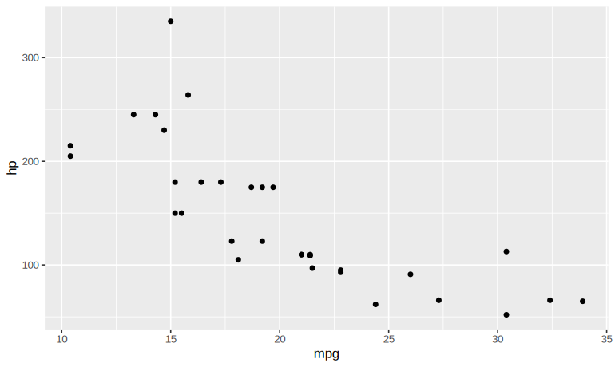
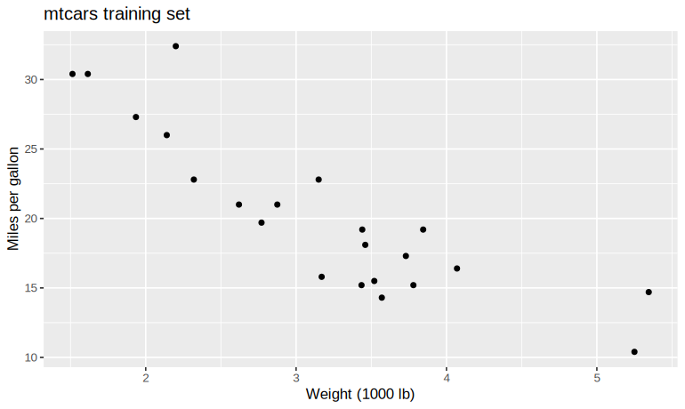
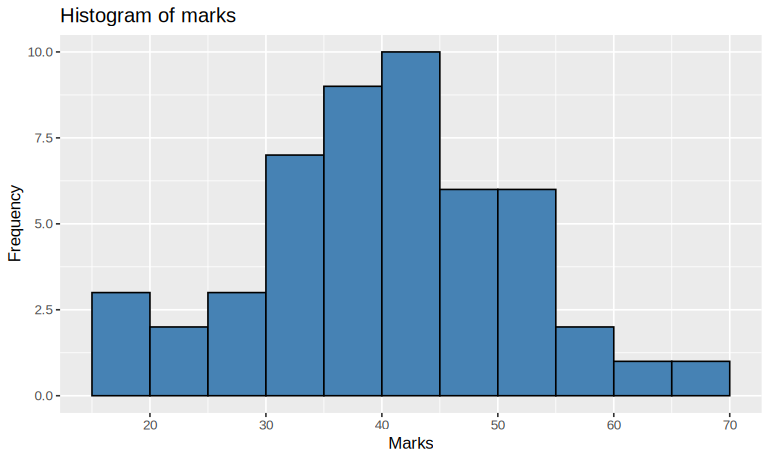
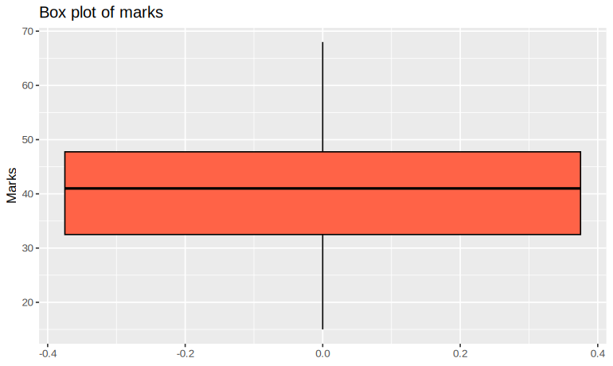
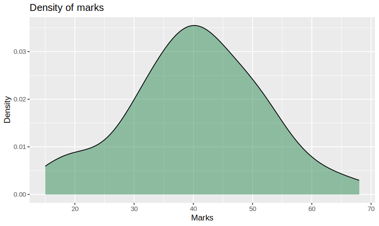
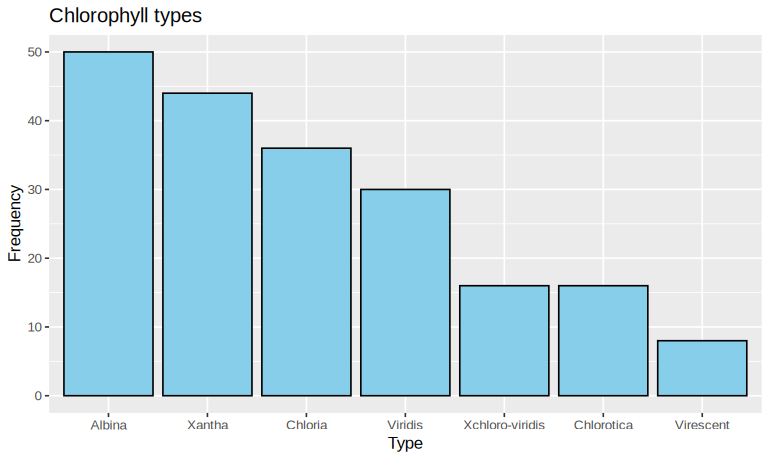
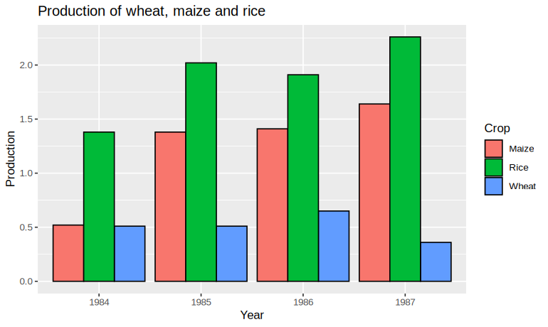
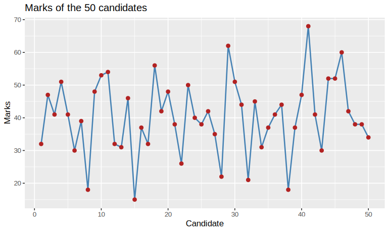
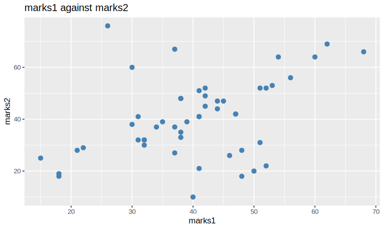

The syllabus exercises and the practicals
The syllabus lists eleven exercises; they are done here in ten practicals. Exercise 2, the working directory, is the last step of Practical 1, and the plots of Exercise 11 begin in Practical 9 and fill Practical 10.
| Exercise | In the syllabus | Done in |
|---|---|---|
| 1 | Installing R and RStudio | Practical 1 |
| 2 | Create a folder DS_R, make it the working directory, and display the current working directory | Practical 1 |
| 3 | Installing the "ggplot2", "caTools", "CART" packages | Practical 2 |
| 4 | Load the packages "ggplot2", "caTools" | Practical 3 |
| 5 | Basic operations in R | Practical 4 |
| 6 | Working with vectors | Practical 5 |
| 7 | A distance matrix and the pair of cities with the shortest distance | Practical 6 |
| 8 | Marks of six students: a data structure, totals, highest per section, a new subject | Practical 7 |
| 9 | Price and demand matrices: total cost per person per shop, and the cheaper shop | Practical 8 |
| 10 | Apply summary() to find the mean, median, standard deviation and other measures | Practical 9 |
| 11 | Implement visualisations: bar, histogram, box, line and scatter plots | Practical 9, Practical 10 |
Practical 1: Installing R and RStudio
1. Question
Install R and RStudio on your computer and confirm that they work. Then create a folder
DS_R, make it the working directory, and display the current working directory.
2. Aim
To install R and RStudio, check the installed version, and set up a working directory for the practicals.
3. Steps
- Install R.
Open cran.r-project.org and choose your system. On Windows: Download R for Windows → base → Download R, run the
.exefile, and accept the defaults (64-bit on a 64-bit machine). On macOS, download the.pkgfile for your processor; on Linux, use your distribution's package (for examplesudo apt install r-baseon Ubuntu). - Install RStudio Desktop.
Open posit.co/download/rstudio-desktop, download the installer for your system, run it, and accept the defaults. RStudio finds the R you installed in Step 1.
- Check the installation.
Open RStudio. In the Console (bottom left), type the command and press Enter.
- Create the folder DS_R and make it the working directory.
The folder is created inside the current working directory (on Windows, usually Documents). In RStudio the same can be done from Session → Set Working Directory → Choose Directory.
| Command or formula | What it does |
|---|---|
| R | the language and its engine, from CRAN, cran.r-project.org |
| RStudio Desktop | a free editor (IDE) that runs R, from posit.co; install R first |
R.version.string | the version of R that is running |
dir.create(path) | creates a folder |
setwd(path) | makes that folder the working directory, where R reads and saves files |
getwd() | prints the current working directory |
4. Programme
# Practical 1: Installing R and RStudio
# Step 3: Check the installation
R.version.string
# Step 4: Create the folder DS_R and make it the working directory (run on your own computer)
dir.create("DS_R")
setwd("DS_R")
getwd()5. Execution and Results
Step 3: Check the installation
[1] "R version 4.3.3 (2024-02-29)"Your version number may be newer; any R 4.x runs every practical on this page.
Step 4: Create the folder DS_R and make it the working directory
[1] "C:/Users/Student/Documents/DS_R"The path printed is the folder on your own computer, so it will differ from this one.
R and RStudio are installed, R.version.string reports the version, and
DS_R is the working directory, so every file the later practicals read or save is kept in one
place.
Practical 2: Installing the Packages "ggplot2", "caTools" and "CART"
1. Question
Install the packages ggplot2, caTools and CART (classification and
regression trees), and check that each one works.
2. Aim
To install packages from CRAN, confirm that they are installed, and test each with a small example.
3. Steps
- Install the packages.
In the Console, with the internet on:
- Check that they are installed.
- Test ggplot2: a scatter plot.
Using the built-in
mtcarsdata: fuel economy against horsepower. - Test caTools: split the iris data 70 : 30.
sample.split()marks each row TRUE (training) or FALSE (test), keeping the share of each species the same in both.set.seed()makes the split repeatable. - Test rpart: a classification tree.
- If an installation fails.
- "package not available": check the spelling (names are case-sensitive)
and the internet, or name a mirror:
install.packages("ggplot2", repos = "https://cloud.r-project.org"). - "dependency is not available": install with its dependencies:
install.packages("ggplot2", dependencies = TRUE). - "non-zero exit status": update R, restart RStudio, and try again.
- "package not available": check the spelling (names are case-sensitive)
and the internet, or name a mirror:
| Command or formula | What it does |
|---|---|
install.packages("name") | downloads a package from CRAN and installs it; needs the internet, once per computer |
install.packages(c("a", "b")) | installs several at once |
library(name) | loads an installed package into the session; once per session |
installed.packages() | the table of installed packages |
ggplot2 | graphics built in layers |
caTools | sample.split(), for splitting data into training and test sets |
rpart | classification and regression trees (CART); it comes with R |
4. Programme
# Practical 2: Installing the Packages "ggplot2", "caTools" and "CART"
# Step 1: Install the packages (run on your own computer)
install.packages("ggplot2") # graphics
install.packages("caTools") # splitting data
# CART is provided by the rpart package, which is installed with R itself
# Step 2: Check that they are installed
c("ggplot2", "caTools", "rpart") %in% rownames(installed.packages())
# Step 3: Test ggplot2: a scatter plot
library(ggplot2)
ggplot(mtcars, aes(x = mpg, y = hp)) + geom_point()
# Step 4: Test caTools: split the iris data 70 : 30
library(caTools)
set.seed(123)
split <- sample.split(iris$Species, SplitRatio = 0.7)
table(split)
# Step 5: Test rpart: a classification tree
library(rpart)
fit <- rpart(Species ~ ., data = iris)
fit5. Execution and Results
Step 1: Install the packages
Installing package into ...
...
* DONE (ggplot2)Each command prints the download and ends with DONE.
Step 2: Check that they are installed
[1] TRUE TRUE TRUEStep 3: Test ggplot2: a scatter plot

Step 4: Test caTools: split the iris data 70 : 30
split
FALSE TRUE
45 105 Step 5: Test rpart: a classification tree
n= 150
node), split, n, loss, yval, (yprob)
* denotes terminal node
1) root 150 100 setosa (0.33333333 0.33333333 0.33333333)
2) Petal.Length< 2.45 50 0 setosa (1.00000000 0.00000000 0.00000000) *
3) Petal.Length>=2.45 100 50 versicolor (0.00000000 0.50000000 0.50000000)
6) Petal.Width< 1.75 54 5 versicolor (0.00000000 0.90740741 0.09259259) *
7) Petal.Width>=1.75 46 1 virginica (0.00000000 0.02173913 0.97826087) *install.packages("CART") fails. Classification and regression trees in R come from rpart, which is installed with R.
dependencies = TRUE is an argument: install.packages("ggplot2", dependencies = TRUE), not a package name in quotes.
The three packages are installed, and each works: ggplot2 draws, caTools splits 150 iris rows into 105 for training and 45 for testing, and rpart grows a tree.
Practical 3: Loading the Packages "ggplot2" and "caTools"
1. Question
Load the packages ggplot2 and caTools, confirm they are loaded, and use
each once.
2. Aim
To load installed packages into the R session and confirm that they are attached.
3. Steps
- Load the packages.
- Confirm they are attached.
- Use caTools: split mtcars into training and test sets.
- Use ggplot2: the training set.
| Command or formula | What it does |
|---|---|
library(name) | loads the package; stops with an error if it is not installed |
(.packages()) | the packages attached in this session |
sample.split(y, SplitRatio) | TRUE for rows chosen for training |
subset(data, condition) | the rows that satisfy a condition |
4. Programme
# Practical 3: Loading the Packages "ggplot2" and "caTools"
# Step 1: Load the packages
library(ggplot2)
library(caTools)
# Step 2: Confirm they are attached
c("ggplot2", "caTools") %in% (.packages())
# Step 3: Use caTools: split mtcars into training and test sets
set.seed(123)
split <- sample.split(mtcars$mpg, SplitRatio = 0.7)
train_set <- subset(mtcars, split == TRUE)
test_set <- subset(mtcars, split == FALSE)
c(train = nrow(train_set), test = nrow(test_set))
# Step 4: Use ggplot2: the training set
ggplot(train_set, aes(x = wt, y = mpg)) + geom_point() +
labs(title = "mtcars training set", x = "Weight (1000 lb)", y = "Miles per gallon")5. Execution and Results
Step 1: Load the packages
Nothing is printed: this step only creates objects or loads packages.
Step 2: Confirm they are attached
[1] TRUE TRUEStep 3: Use caTools: split mtcars into training and test sets
train test
22 10 Step 4: Use ggplot2: the training set

Both packages load without error and are attached. install.packages() is run once
on a computer; library() is run in every new session.
Practical 4: Basic Operations in R
1. Question
Carry out the basic operations of R with examples: arithmetic, assignment, logical operations, vectors, matrices, statistical functions, sequences, conditions, loops and functions.
2. Aim
To learn the basic operations of R through small numerical examples.
3. Steps
- Arithmetic.
- Assignment.
- Logical operations.
- Vector operations.
- Matrix operations.
+adds element by element;%*%is the matrix product. - Statistical functions.
- Sequences and repetition.
- Conditional statements.
- Loops.
- Functions.
| Command or formula | What it does |
|---|---|
+ - * / ^ | add, subtract, multiply, divide, power |
%% and %/% | remainder and integer division |
<- or = | assignment |
> < == != >= <=, & | ! | comparisons, and logical and, or, not |
c(), matrix(), %*% | vectors, matrices, matrix product |
mean() median() sd() var() summary() | statistics |
seq() rep() | sequences and repetition |
if / else, for, while, function | control and functions |
4. Programme
# Practical 4: Basic Operations in R
# Step 1: Arithmetic
5 + 3
10 - 4
6 * 7
20 / 4
2 ^ 3
10 %% 3
10 %/% 3
# Step 2: Assignment
a <- 15
b = 4
sum_result <- a + b
prod_result <- a * b
print(sum_result)
print(prod_result)
# Step 3: Logical operations
x <- 10
y <- 20
x > y
x < y
x == y
x != y
x >= y
(x > 5) & (y < 30)
(x > 5) | (y > 30)
!(x > y)
# Step 4: Vector operations
vec1 <- c(2, 4, 6)
vec2 <- c(1, 3, 5)
vec1 + vec2
vec1 * vec2
vec1 / vec2
vec1 > vec2
# Step 5: Matrix operations
mat1 <- matrix(c(1, 2, 3, 4), nrow = 2, ncol = 2)
mat2 <- matrix(c(5, 6, 7, 8), nrow = 2, ncol = 2)
mat1 + mat2
mat1 %*% mat2
# Step 6: Statistical functions
nums <- c(10, 20, 30, 40, 50)
mean(nums)
median(nums)
sd(nums)
var(nums)
min(nums)
max(nums)
summary(nums)
# Step 7: Sequences and repetition
seq(1, 10)
seq(1, 10, by = 2)
rep(5, times = 4)
rep(c(1, 2, 3), times = 3)
# Step 8: Conditional statements
x <- 15
if (x > 10) {
print("x is greater than 10")
} else if (x == 10) {
print("x is exactly 10")
} else {
print("x is less than 10")
}
# Step 9: Loops
for (i in 1:5) {
print(i)
}
x <- 1
while (x <= 3) {
print(x)
x <- x + 1
}
# Step 10: Functions
square <- function(num) {
return(num ^ 2)
}
square(4)
square(5)5. Execution and Results
Step 1: Arithmetic
[1] 8
[1] 6
[1] 42
[1] 5
[1] 8
[1] 1
[1] 3Step 2: Assignment
[1] 19
[1] 60Step 3: Logical operations
[1] FALSE
[1] TRUE
[1] FALSE
[1] TRUE
[1] FALSE
[1] TRUE
[1] TRUE
[1] TRUEStep 4: Vector operations
[1] 3 7 11
[1] 2 12 30
[1] 2.000000 1.333333 1.200000
[1] TRUE TRUE TRUEStep 5: Matrix operations
[,1] [,2]
[1,] 6 10
[2,] 8 12
[,1] [,2]
[1,] 23 31
[2,] 34 46Step 6: Statistical functions
[1] 30
[1] 30
[1] 15.81139
[1] 250
[1] 10
[1] 50
Min. 1st Qu. Median Mean 3rd Qu. Max.
10 20 30 30 40 50 Step 7: Sequences and repetition
[1] 1 2 3 4 5 6 7 8 9 10
[1] 1 3 5 7 9
[1] 5 5 5 5
[1] 1 2 3 1 2 3 1 2 3Step 8: Conditional statements
[1] "x is greater than 10"Step 9: Loops
[1] 1
[1] 2
[1] 3
[1] 4
[1] 5
[1] 1
[1] 2
[1] 3Step 10: Functions
[1] 16
[1] 25sd() and var() divide by n − 1, the sample formulas: for 10, 20, 30, 40, 50 they give 15.81 and 250. Dividing by n would give 14.14 and 200.
R works as a calculator, stores values in variables, compares them, and operates on whole vectors and matrices at once; its statistical functions, sequences, conditions, loops and user-written functions are the building blocks of every later practical.
Practical 5: Working with Vectors using R
1. Question
(a) Create a vector v1 with elements 1 to 20. (b) Add 2 to every element of
v1. (c) Divide every element of v1 by 5. (d) Create a vector v2 with
elements 21 to 30, and add v1 to v2.
2. Aim
To create vectors and operate on every element at once, and to see how R adds vectors of different lengths.
3. Steps
- (a) Create v1 with elements 1 to 20.
- (b) Add 2 to every element.
- (c) Divide every element by 5.
- (d) Create v2 with elements 21 to 30.
- (d) Add v1 to v2.
v1has 20 elements andv2has 10. R recycles the shorter vector:v2is used twice, so element 11 ofv1is added to element 1 ofv2again. Because 20 is a multiple of 10, R gives no warning. - When the lengths do not fit.
If the longer length is not a multiple of the shorter, R still recycles but warns.
- Adding only the matching elements.
To add element by element without recycling, use the first ten elements of
v1.
| Command or formula | What it does |
|---|---|
a:b | the whole numbers from a to b |
v + k, v / k | applies the operation to every element |
v1 + v2 | adds element by element; a shorter vector is recycled |
v[1:10] | the first ten elements |
length(v) | the number of elements |
4. Programme
# Practical 5: Working with Vectors using R
# Step 1: (a) Create v1 with elements 1 to 20
v1 <- 1:20
v1
# Step 2: (b) Add 2 to every element
v1 + 2
# Step 3: (c) Divide every element by 5
v1 / 5
# Step 4: (d) Create v2 with elements 21 to 30
v2 <- 21:30
v2
length(v1); length(v2)
# Step 5: (d) Add v1 to v2
v1 + v2
# Step 6: When the lengths do not fit
1:20 + 1:3
# Step 7: Adding only the matching elements
v1[1:10] + v25. Execution and Results
Step 1: (a) Create v1 with elements 1 to 20
[1] 1 2 3 4 5 6 7 8 9 10 11 12 13 14 15 16 17 18 19 20Step 2: (b) Add 2 to every element
[1] 3 4 5 6 7 8 9 10 11 12 13 14 15 16 17 18 19 20 21 22Step 3: (c) Divide every element by 5
[1] 0.2 0.4 0.6 0.8 1.0 1.2 1.4 1.6 1.8 2.0 2.2 2.4 2.6 2.8 3.0 3.2
[17] 3.4 3.6 3.8 4.0Step 4: (d) Create v2 with elements 21 to 30
[1] 21 22 23 24 25 26 27 28 29 30
[1] 20
[1] 10Step 5: (d) Add v1 to v2
[1] 22 24 26 28 30 32 34 36 38 40 32 34 36 38 40 42 44 46 48 50Step 6: When the lengths do not fit
[1] 2 4 6 5 7 9 8 10 12 11 13 15 14 16 18 17 19 21 20 22
Warning message:
In 1:20 + 1:3 :
longer object length is not a multiple of shorter object lengthStep 7: Adding only the matching elements
[1] 22 24 26 28 30 32 34 36 38 40v1 + v2 with 20 and 10 elements gives no warning, because 20 is a multiple of 10; R recycles v2 silently. The warning "longer object length is not a multiple of shorter object length" appears only when it is not a multiple, as in 1:20 + 1:3.
Arithmetic on a vector acts on every element. Adding two vectors works element by element,
recycling the shorter one, which is why v1 + v2 has 20 elements: 22, 24, …, 40 and then
32, 34, …, 50.
Practical 6: Create the Matrix of the Data using R
1. Question
Using the distances between five cities in the table below, create a matrix M and find
the pair of cities with the shortest distance.
| C1 | C2 | C3 | C4 | C5 | |
|---|---|---|---|---|---|
| C1 | 0 | 12 | 13 | 8 | 20 |
| C2 | 12 | 0 | 15 | 28 | 88 |
| C3 | 13 | 15 | 0 | 6 | 9 |
| C4 | 8 | 28 | 6 | 0 | 33 |
| C5 | 20 | 88 | 9 | 33 | 0 |
2. Aim
To store a table as a matrix with row and column names, and to search it for its smallest off-diagonal value.
3. Steps
- Create the matrix M.
- Check that the matrix is symmetric.
The distance from C1 to C2 must equal the distance from C2 to C1.
- Find the shortest distance.
The diagonal (a city to itself) is 0 and must be left out, and each pair appears twice, above and below the diagonal. Looking only above the diagonal counts each pair once.
- Name the pair of cities.
| Command or formula | What it does |
|---|---|
matrix(x, nrow, ncol, byrow = TRUE) | a matrix filled row by row |
rownames(), colnames() | name the rows and columns |
upper.tri(M) | TRUE above the diagonal: each pair of cities once |
min(), which(..., arr.ind = TRUE) | the smallest value, and its row and column |
4. Programme
# Practical 6: Create the Matrix of the Data using R
# Step 1: Create the matrix M
M <- matrix(c( 0, 12, 13, 8, 20,
12, 0, 15, 28, 88,
13, 15, 0, 6, 9,
8, 28, 6, 0, 33,
20, 88, 9, 33, 0),
nrow = 5, ncol = 5, byrow = TRUE)
city <- c("C1", "C2", "C3", "C4", "C5")
rownames(M) <- city
colnames(M) <- city
M
# Step 2: Check that the matrix is symmetric
isSymmetric(M)
# Step 3: Find the shortest distance
pairs <- M[upper.tri(M)]
min_distance <- min(pairs)
min_distance
# Step 4: Name the pair of cities
where <- which(M == min_distance & upper.tri(M), arr.ind = TRUE)
where
cat("The shortest distance is", min_distance, "between",
rownames(M)[where[1, "row"]], "and", colnames(M)[where[1, "col"]], "\n")5. Execution and Results
Step 1: Create the matrix M
C1 C2 C3 C4 C5
C1 0 12 13 8 20
C2 12 0 15 28 88
C3 13 15 0 6 9
C4 8 28 6 0 33
C5 20 88 9 33 0Step 2: Check that the matrix is symmetric
[1] TRUEStep 3: Find the shortest distance
[1] 6Step 4: Name the pair of cities
row col
C3 3 4
The shortest distance is 6 between C3 and C4 which(M == min_distance, arr.ind = TRUE) after setting the zeros to Inf, returns two rows, (C4, C3) and (C3, C4), because the matrix is symmetric; its first row names the pair as "C4 and C3". Restricting the search to upper.tri(M) gives each pair once.
The shortest distance is 6, between cities C3 and C4.
Practical 7: Create the Data Structures of the Data using R
1. Question
The marks scored by six students in two sections are:
| Section | Student | M1 | M2 | M3 |
|---|---|---|---|---|
| A | 1 | 46 | 54 | 45 |
| A | 2 | 34 | 55 | 55 |
| A | 3 | 56 | 66 | 64 |
| B | 1 | 43 | 44 | 45 |
| B | 2 | 67 | 76 | 78 |
| B | 3 | 76 | 68 | 37 |
(a) Create a data structure for the data, with proper names. (b) Display the marks and totals of all students. (c) Display the highest total in each section. (d) Add a new subject, M4, with marks for both sections (50, 48, 67 for Section A and 54, 73, 42 for Section B).
2. Aim
To store mixed data in a data frame, add computed and new columns, and summarise by group.
3. Steps
- (a) Create the data frame.
- (b) Marks and totals of all students.
- (c) The highest total in each section.
- (d) Add a new subject M4 and recompute the totals.
| Command or formula | What it does |
|---|---|
data.frame() | a table whose columns may be of different types |
df$col | one column; assigning to a new name adds a column |
rowSums(df[ , cols]) | the total of each row |
tapply(x, group, max) | the maximum of x within each group |
4. Programme
# Practical 7: Create the Data Structures of the Data using R
# Step 1: (a) Create the data frame
marks <- data.frame(
Section = c("A", "A", "A", "B", "B", "B"),
Student = c(1, 2, 3, 1, 2, 3),
M1 = c(46, 34, 56, 43, 67, 76),
M2 = c(54, 55, 66, 44, 76, 68),
M3 = c(45, 55, 64, 45, 78, 37)
)
marks
str(marks)
# Step 2: (b) Marks and totals of all students
marks$Total <- rowSums(marks[ , c("M1", "M2", "M3")])
marks
# Step 3: (c) The highest total in each section
tapply(marks$Total, marks$Section, max)
marks[marks$Total == ave(marks$Total, marks$Section, FUN = max), ]
# Step 4: (d) Add a new subject M4 and recompute the totals
marks$M4 <- c(50, 48, 67, 54, 73, 42)
marks$Total <- rowSums(marks[ , c("M1", "M2", "M3", "M4")])
marks
tapply(marks$Total, marks$Section, max)5. Execution and Results
Step 1: (a) Create the data frame
Section Student M1 M2 M3
1 A 1 46 54 45
2 A 2 34 55 55
3 A 3 56 66 64
4 B 1 43 44 45
5 B 2 67 76 78
6 B 3 76 68 37
'data.frame': 6 obs. of 5 variables:
$ Section: chr "A" "A" "A" "B" ...
$ Student: num 1 2 3 1 2 3
$ M1 : num 46 34 56 43 67 76
$ M2 : num 54 55 66 44 76 68
$ M3 : num 45 55 64 45 78 37Step 2: (b) Marks and totals of all students
Section Student M1 M2 M3 Total
1 A 1 46 54 45 145
2 A 2 34 55 55 144
3 A 3 56 66 64 186
4 B 1 43 44 45 132
5 B 2 67 76 78 221
6 B 3 76 68 37 181Step 3: (c) The highest total in each section
A B
186 221
Section Student M1 M2 M3 Total
3 A 3 56 66 64 186
5 B 2 67 76 78 221Step 4: (d) Add a new subject M4 and recompute the totals
Section Student M1 M2 M3 Total M4
1 A 1 46 54 45 195 50
2 A 2 34 55 55 192 48
3 A 3 56 66 64 253 67
4 B 1 43 44 45 186 54
5 B 2 67 76 78 294 73
6 B 3 76 68 37 223 42
A B
253 294 With three subjects, the highest totals are 186 in Section A (student 3) and 221 in Section B (student 2). With M4 added, they become 253 and 294, for the same two students.
Practical 8: Create the Matrix of the Data using R with Row and Column Names
1. Question
Three people, P1, P2 and P3, intend to buy rolls, buns, cakes and bread, in different amounts, from one of two shops, S1 and S2. The prices (in rupees) and the quantities wanted are:
| Item | Price at S1 | Price at S2 |
|---|---|---|
| Roll | 1.5 | 1 |
| Bun | 2 | 2.5 |
| Cake | 5 | 4.5 |
| Bread | 16 | 17 |
| Person | Roll | Bun | Cake | Bread |
|---|---|---|---|---|
| P1 | 6 | 5 | 3 | 1 |
| P2 | 3 | 6 | 3 | 2 |
| P3 | 3 | 4 | 3 | 1 |
(a) Create the matrices of this information with row and column names. (b) Display the demand and price matrices. (c) Find the total amount each person would spend in each shop. (d) Suggest the shop where each person should buy.
2. Aim
To represent the data as named matrices and use the matrix product to find each person's bill in each shop.
3. Steps
- (a) Create the price matrix.
- (a) Create the demand matrix.
- (b) Display the two matrices.
- (c) The total amount each person spends in each shop.
Each row of
demandtimes each column ofpriceis one bill. For P1 at S1: 6 × 1.5 + 5 × 2 + 3 × 5 + 1 × 16 = 9 + 10 + 15 + 16 = 50. - (d) The cheaper shop for each person.
| Command or formula | What it does |
|---|---|
matrix(..., byrow = TRUE, dimnames = list(rows, cols)) | a named matrix |
D %*% P | the matrix product: (3 × 4) times (4 × 2) gives 3 × 2 |
| Total cost | person i at shop j = Σk quantityik × pricekj |
apply(m, 1, f) | applies f to each row |
4. Programme
# Practical 8: Create the Matrix of the Data using R with Row and Column Names
# Step 1: (a) Create the price matrix
price <- matrix(c(1.5, 1,
2, 2.5,
5, 4.5,
16, 17),
nrow = 4, byrow = TRUE,
dimnames = list(c("Roll", "Bun", "Cake", "Bread"), c("S1", "S2")))
# Step 2: (a) Create the demand matrix
demand <- matrix(c(6, 5, 3, 1,
3, 6, 3, 2,
3, 4, 3, 1),
nrow = 3, byrow = TRUE,
dimnames = list(c("P1", "P2", "P3"), c("Roll", "Bun", "Cake", "Bread")))
# Step 3: (b) Display the two matrices
price
demand
# Step 4: (c) The total amount each person spends in each shop
cost <- demand %*% price
cost
# Step 5: (d) The cheaper shop for each person
apply(cost, 1, function(r) if (r["S1"] < r["S2"]) "S1" else if (r["S1"] > r["S2"]) "S2" else "either")5. Execution and Results
Step 1: (a) Create the price matrix
Nothing is printed: this step only creates objects or loads packages.
Step 2: (a) Create the demand matrix
Nothing is printed: this step only creates objects or loads packages.
Step 3: (b) Display the two matrices
S1 S2
Roll 1.5 1.0
Bun 2.0 2.5
Cake 5.0 4.5
Bread 16.0 17.0
Roll Bun Cake Bread
P1 6 5 3 1
P2 3 6 3 2
P3 3 4 3 1Step 4: (c) The total amount each person spends in each shop
S1 S2
P1 50.0 49.0
P2 63.5 65.5
P3 43.5 43.5Step 5: (d) The cheaper shop for each person
P1 P2 P3
"S2" "S1" "either" P1 spends ₹50 at S1 and ₹49 at S2, so should buy at S2; P2 spends ₹63.50 and ₹65.50, so should buy at S1; P3 spends ₹43.50 at either shop.
Practical 9: Applying the Summary of Data using R
1. Question
The marks in statistics of 50 candidates chosen at random from those appearing in an examination are:
32, 47, 41, 51, 41, 30, 39, 18, 48, 53, 54, 32, 31, 46, 15, 37, 32, 56, 42, 48, 38, 26, 50, 40, 38, 42, 35, 22, 62, 51, 44, 21, 45, 31, 37, 41, 44, 18, 37, 47, 68, 41, 30, 52, 52, 60, 42, 38, 38, 34
(a) Apply summary() to the data. (b) Calculate all the measures of dispersion. (c) Draw
suitable graphs of the data.
2. Aim
To summarise a set of marks with R's built-in functions, measure their spread, and show their distribution in graphs.
3. Steps
- Enter the data.
- (a) Summary of the data.
The sorted marks show the order statistics behind the quartiles;
table()gives the frequencies, from which the mode is read. - (b) Measures of dispersion.
- (c) Histogram.
- (c) Box plot.
- (c) Density plot.
| Command or formula | What it does |
|---|---|
summary(x) | minimum, first quartile, median, mean, third quartile, maximum |
| Range | max − min: diff(range(x)) |
| Variance | sample: Σ(x − x̄)² / (n − 1), var(x); population: Σ(x − x̄)² / n |
| Standard deviation | the square root of the variance: sd(x) (sample) |
| Quartile deviation | (Q3 − Q1) / 2, with IQR(x) = Q3 − Q1 |
| Mean deviation | Σ|x − x̄| / n |
| Coefficient of variation | s / x̄ × 100 |
4. Programme
# Practical 9: Applying the Summary of Data using R
# Step 1: Enter the data
marks <- c(32, 47, 41, 51, 41, 30, 39, 18, 48, 53,
54, 32, 31, 46, 15, 37, 32, 56, 42, 48,
38, 26, 50, 40, 38, 42, 35, 22, 62, 51,
44, 21, 45, 31, 37, 41, 44, 18, 37, 47,
68, 41, 30, 52, 52, 60, 42, 38, 38, 34)
length(marks)
# Step 2: (a) Summary of the data
summary(marks)
sort(marks)
freq <- table(marks)
names(freq)[freq == max(freq)] # the mode(s)
# Step 3: (b) Measures of dispersion
n <- length(marks)
c(range = diff(range(marks)),
variance_sample = var(marks),
variance_population = var(marks) * (n - 1) / n,
sd_sample = sd(marks),
sd_population = sqrt(var(marks) * (n - 1) / n),
IQR = IQR(marks),
quartile_deviation = IQR(marks) / 2,
mean_deviation = mean(abs(marks - mean(marks))),
CV_percent = sd(marks) / mean(marks) * 100)
# Step 4: (c) Histogram
library(ggplot2)
ggplot(data.frame(marks), aes(x = marks)) +
geom_histogram(binwidth = 5, boundary = 15, fill = "steelblue", colour = "black") +
labs(title = "Histogram of marks", x = "Marks", y = "Frequency")
# Step 5: (c) Box plot
ggplot(data.frame(marks), aes(y = marks)) +
geom_boxplot(fill = "tomato", colour = "black") +
labs(title = "Box plot of marks", y = "Marks")
# Step 6: (c) Density plot
ggplot(data.frame(marks), aes(x = marks)) +
geom_density(fill = "seagreen", alpha = 0.5) +
labs(title = "Density of marks", x = "Marks", y = "Density")5. Execution and Results
Step 1: Enter the data
[1] 50Step 2: (a) Summary of the data
Min. 1st Qu. Median Mean 3rd Qu. Max.
15.00 32.50 41.00 40.34 47.75 68.00
[1] 15 18 18 21 22 26 30 30 31 31 32 32 32 34 35 37 37 37 38 38 38 38
[23] 39 40 41 41 41 41 42 42 42 44 44 45 46 47 47 48 48 50 51 51 52 52
[45] 53 54 56 60 62 68
[1] "38" "41"Step 3: (b) Measures of dispersion
range variance_sample variance_population
53.00000 130.22898 127.62440
sd_sample sd_population IQR
11.41179 11.29710 15.25000
quartile_deviation mean_deviation CV_percent
7.62500 8.76640 28.28902 Step 4: (c) Histogram

Step 5: (c) Box plot

Step 6: (c) Density plot

var() and sd() divide by n − 1 and give 130.23 and 11.41. Dividing by n gives 127.62 and 11.30, the population figures that are often printed; the coefficient of variation is then 28.0% instead of 28.3%. State which divisor you use.
mad() is the median absolute deviation (scaled by 1.4826), not the mean deviation; the mean deviation about the mean is mean(abs(x - mean(x))) = 8.77.
The marks run from 15 to 68 (range 53), with mean 40.34, median 41 and modes 38 and 41. The quartiles are 32.5 and 47.75, so the IQR is 15.25. The sample standard deviation is 11.41 and the coefficient of variation 28.3%. The histogram and density plot show one central peak around 40, slightly longer on the left; the box plot shows no outliers.
Practical 10: Implementation of Data Visualizations using R
1. Question
(i) For the 50 marks of Practical 9, draw a histogram, a box plot and a line plot.
(ii) Draw a bar chart of the chlorophyll data, and a multiple bar chart of the production data.
| Chlorophyll type | Frequency |
|---|---|
| Albina | 50 |
| Xantha | 44 |
| Chloria | 36 |
| Viridis | 30 |
| Xchloro-viridis | 16 |
| Chlorotica | 16 |
| Virescent | 8 |
| Year | Wheat | Maize | Rice |
|---|---|---|---|
| 1984 | 0.51 | 0.52 | 1.38 |
| 1985 | 0.51 | 1.38 | 2.02 |
| 1986 | 0.65 | 1.41 | 1.91 |
| 1987 | 0.36 | 1.64 | 2.26 |
(iii) Draw a scatter plot of marks1 (the marks of Practical 9) against marks2:
30, 42, 41, 31, 41, 38, 39, 18, 28, 53, 64, 32, 41, 26, 25, 37, 32, 56, 52, 18, 48, 76, 20, 10, 48, 45, 39, 29, 69, 52, 47, 28, 47, 32, 67, 51, 44, 19, 27, 42, 66, 21, 60, 22, 52, 64, 49, 33, 35, 37
2. Aim
To draw the standard graphs of R, each suited to a different kind of data: bar, multiple bar, histogram, box, line and scatter plots.
3. Steps
- The data.
- (ii) Bar chart of the chlorophyll types.
factor(..., levels = ...)keeps the bars in the table's order, not alphabetical. - (ii) Multiple bar chart of crop production.
- (i) Histogram of the marks.
- (i) Box plot of the marks.
- (i) Line plot of the marks, in the order given.
- (iii) Scatter plot of marks1 against marks2.
The two vectors go into one data frame first, so that
ggplot()plots these marks and not another data set.
| Command or formula | What it does |
|---|---|
| Bar chart | geom_col() (or geom_bar(stat = "identity")): categories against their frequencies |
| Multiple bar chart | geom_col(position = "dodge"): one bar per group within each category |
| Histogram | geom_histogram(): the distribution of a continuous variable |
| Box plot | geom_boxplot(): median, quartiles and outliers |
| Line plot | geom_line(): values in order |
| Scatter plot | geom_point(): one variable against another; cor() measures the linear relation |
4. Programme
# Practical 10: Implementation of Data Visualizations using R
# Step 1: The data
library(ggplot2)
marks1 <- c(32, 47, 41, 51, 41, 30, 39, 18, 48, 53,
54, 32, 31, 46, 15, 37, 32, 56, 42, 48,
38, 26, 50, 40, 38, 42, 35, 22, 62, 51,
44, 21, 45, 31, 37, 41, 44, 18, 37, 47,
68, 41, 30, 52, 52, 60, 42, 38, 38, 34)
marks2 <- c(30, 42, 41, 31, 41, 38, 39, 18, 28, 53,
64, 32, 41, 26, 25, 37, 32, 56, 52, 18,
48, 76, 20, 10, 48, 45, 39, 29, 69, 52,
47, 28, 47, 32, 67, 51, 44, 19, 27, 42,
66, 21, 60, 22, 52, 64, 49, 33, 35, 37)
chlorophyll <- data.frame(
Type = c("Albina", "Xantha", "Chloria", "Viridis", "Xchloro-viridis", "Chlorotica", "Virescent"),
Frequency = c(50, 44, 36, 30, 16, 16, 8))
crops <- data.frame(
Year = rep(c(1984, 1985, 1986, 1987), each = 3),
Crop = rep(c("Wheat", "Maize", "Rice"), times = 4),
Production = c(0.51, 0.52, 1.38, 0.51, 1.38, 2.02, 0.65, 1.41, 1.91, 0.36, 1.64, 2.26))
c(length(marks1), length(marks2))
# Step 2: (ii) Bar chart of the chlorophyll types
chlorophyll$Type <- factor(chlorophyll$Type, levels = chlorophyll$Type)
ggplot(chlorophyll, aes(x = Type, y = Frequency)) +
geom_col(fill = "skyblue", colour = "black") +
labs(title = "Chlorophyll types", x = "Type", y = "Frequency")
# Step 3: (ii) Multiple bar chart of crop production
ggplot(crops, aes(x = factor(Year), y = Production, fill = Crop)) +
geom_col(position = "dodge", colour = "black") +
labs(title = "Production of wheat, maize and rice", x = "Year", y = "Production")
# Step 4: (i) Histogram of the marks
ggplot(data.frame(marks1), aes(x = marks1)) +
geom_histogram(binwidth = 5, boundary = 15, fill = "steelblue", colour = "black") +
labs(title = "Histogram of marks", x = "Marks", y = "Frequency")
# Step 5: (i) Box plot of the marks
ggplot(data.frame(marks1), aes(y = marks1)) +
geom_boxplot(fill = "tomato", colour = "black") +
labs(title = "Box plot of marks", y = "Marks")
# Step 6: (i) Line plot of the marks, in the order given
ggplot(data.frame(candidate = seq_along(marks1), marks1), aes(x = candidate, y = marks1)) +
geom_line(colour = "steelblue", linewidth = 0.8) +
geom_point(colour = "firebrick", size = 2) +
labs(title = "Marks of the 50 candidates", x = "Candidate", y = "Marks")
# Step 7: (iii) Scatter plot of marks1 against marks2
pairs <- data.frame(marks1, marks2)
ggplot(pairs, aes(x = marks1, y = marks2)) +
geom_point(colour = "steelblue", size = 2.5) +
labs(title = "marks1 against marks2", x = "marks1", y = "marks2")
round(cor(marks1, marks2), 3)5. Execution and Results
Step 1: The data
[1] 50 50Step 2: (ii) Bar chart of the chlorophyll types

Step 3: (ii) Multiple bar chart of crop production

Step 4: (i) Histogram of the marks

Step 5: (i) Box plot of the marks

Step 6: (i) Line plot of the marks, in the order given

Step 7: (iii) Scatter plot of marks1 against marks2
[1] 0.409
marks1 and marks2 must be put into a data frame (pairs <- data.frame(marks1, marks2)) before ggplot(). A version with that line commented out plots whatever data frame was last called data.
linewidth; size still works for points but is deprecated for lines.
The bar chart compares the seven chlorophyll types, with Albina the most frequent; the multiple bar chart shows rice the largest crop in every year. The histogram, box plot and line plot show the marks' distribution and their variation from candidate to candidate; the scatter plot shows marks2 tending to rise with marks1, a moderate positive relation (correlation 0.41).